Con ella empezó todo. Estrenada hace ya más de ochenta años, 'Blancanieves y los siete enanitos' fue una película revolucionaria para el estudio, siendo la primera en utilizar captura de movimiento para su animación. Por no hablar de que Blancanieves fue la primera princesa de una larga estirpe real en Disney. Ahí es nada.
Sinopsis: Érase una vez una princesita llamada Blanca Nieves. Su madrastra, celosa de su belleza, la echa del palacio donde vive, arrojándola a un bosque con la intención de que la devoren las alimañas. La madrastra vuelve a consultar con su espejo mágico para saber si es la más bella, pero éste contesta que lo es Blanca Nieves. Sale al bosque a buscarla y descubre que vive en el bosque con siete revoltosos y simpáticos enanitos.
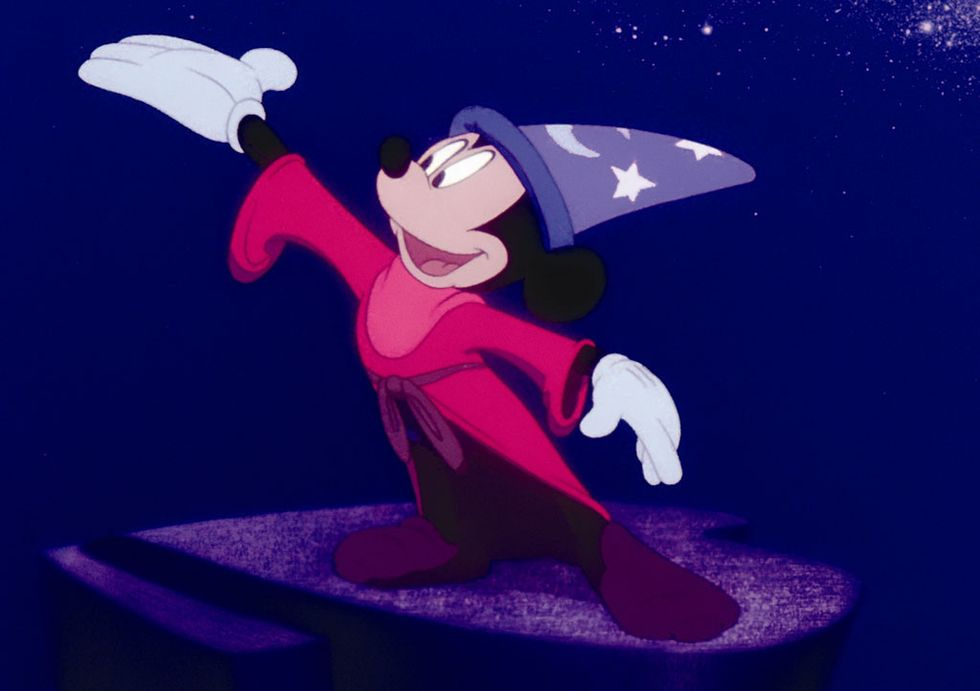
La mayoría la recordará por el fragmento en el que Mickey Mouse tiene una experiencia intensa con la magia y unas escobas, ataviado con su icónica túnica roja y su gorro azul de lunas y estrellas, pero hay mucho más en este clásico del Disney de los 40.
Sinopsis: Colección de interpretaciones animadas de grandes obras de música clásica, como 'El Aprendiz de Brujo' (P. Dukas) con Mickey Mouse, 'La Consagración de la Primavera' (Stravinsky) que cuenta la historia de la evolución, y 'La Danza de las Horas' (Ponchielli) un ballet con elefantes, hipopótamos, cocodrilos y avestruces.
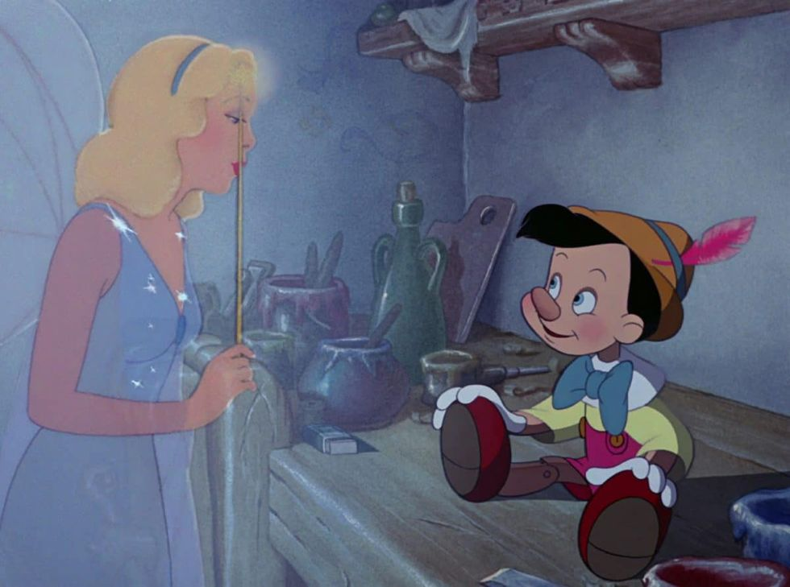
Pinocho es el clasico mas tenebroso de disney por muchas razones, desde el momento en el que el protagonista se convierte en un burro hasta cuando se lo traga una ballena enorme. Había algo muy inquietante en estos clásicos de Disney, pero eso es precisamente lo que nos hace quererlos tanto.
Sinopsis: Un anciano llamado Geppetto fabrica una marioneta de madera a la que llama Pinocho, con la esperanza de que se convierta en un niño de verdad. El Hada Azul hace realidad su deseo y da vida a Pinocho, pero conserva su cuerpo de madera. Pepito Grillo, la conciencia de Pinocho, tendrá que aconsejarlo para que se aleje de las situaciones difíciles o peligrosas hasta conseguir que el muñeco se convierta en un niño de carne y hueso.
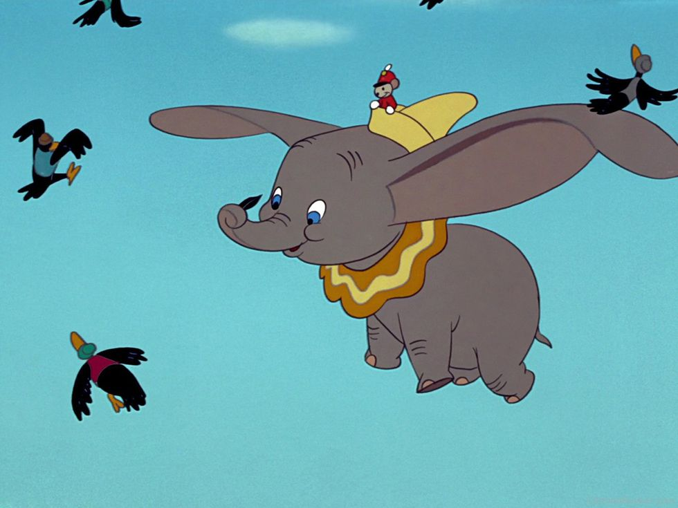
Desde luego, Disney siempre ha sabido cómo rompernos el corazón. Basándose en un relato de Helen Alberson y Harold Pearl, nos presentó a este pequeño elefante que debía sobrevivir, a la vida y a una borrachera que le provocó alucinaciones con elefantes rosas. Esa escena es una de las más icónicas de la historia del estudio, y, esta, una de sus películas más trágicamente brillantes.
Sinopsis: Las cigüeñas llegan, como todos los años, hasta un pintoresco circo para repartir los bebés a sus respectivas mamás. La señora Dumbo, una elefanta, descubre que su pequeño tiene unas orejas enormes; todas sus compañeras se ríen de su bebé, pero la señora Dumbo le defiende siempre, hasta el punto de ser encerrada por enfrentarse a todo aquél que se mofe de su retoño.
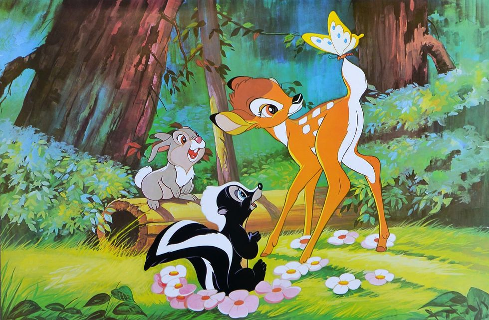
Adaptación de una novela de Felix Salten, convertida en uno de los clásicos más identificables y traumáticos de Disney. Sí, traumáticos: la muerte de la madre de Bambi sigue siendo una herida abierta en muchas infancias, y uno de los momentos más traumáticos de Disney. Por suerte, la película es mucho más que su momento más duro.
Sinopsis: Con los primeros rayos del sol iluminando la pradera, un nuevo príncipe ha nacido en el bosque. Tan pronto como Bambi aprende a dar sus primeros pasos, comienza a jugar con sus nuevos amigos, Tambor, el conejo juguetón, y Flor, la tímida y adorable mofeta. Pero la diversión acabará y Bambi tendrá que aprender lecciones sobre el valor del amor, la pérdida de los seres queridos y la madurez.

¡Cuántas versiones tan variadas hemos tenido de Cenicienta! Sin embargo, el cuento de Charles Perrault encontró una de sus adaptaciones más icónicas en esta película animada de Disney, con canciones para el recuerdo y un romanticismo que sentaría muchas bases en el estudio y, también, en su público.
Sinopsis: Cenicienta es una muchacha que vive con su madrastra y sus dos hermanas. Mientras ellas disfrutan los placeres de la alta sociedad, Cenicienta se encarga del resto de tareas; friega, cocina, barre, plancha... Pero todo puede cambiar gracias a la aparición de su Hada Madrina.
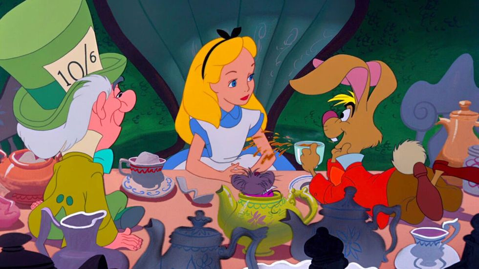
Una de las historias más icónicas de todos los tiempos, la escrita por Lewis Carroll, se encontró con la animación de Disney para dar como resultado una de las películas infantiles más exitosas de los años 50. Con reinas que cortan cabezas, sombrereros locos y gatos misteriosos que saben más de lo que dicen, esta historia (y sus muchas lecturas) sigue siendo todo un clásico.
Sinopsis: Una niña cae profundamente dormida leyendo un libro. Tras ésto, se introduce en un mundo extravagante y diferente, en el que se verá envuelta en un sinfín de aventuras con personajes de todo tipo.

El niño que no quería crecer, según lo ideó el escritor J.M. Barrie, se convirtió en otro buque insignia del estudio en los años 50. Ver cómo cobraron vida Campanilla, Wendy y compañía fue toda una experiencia para los niños de la época, y su impacto se repitió durante las generaciones siguientes.
Sinopsis: Peter Pan, un niño extraordinario, lleva a Wendy Darling y a sus hermanos John y Michael en la víspera de su "último día en el cuarto infantil" al país de Nunca jamás. Pero el malvado capitán Garfio está al acecho y les inctercepta, comenzando una aventura llena de peligros y magia.

La historia de Disney no sería la misma sin la escena de los espaguetis de 'La dama y el vagabundo'. Un momento tan icónico como adorable en el que Reina y Golfo se encuentran dándose un beso gracias a un plato de pasta bolognesa. Aunque el remake de acción real sea un poco espantoso, este clásico vivirá para siempre.
Sinopsis: Reina, una cocker spaniel inteligente y mimada en su hogar, y Golfo, un perro callejero duro y charlatán pero adorable, se embarcan en una inesperada aventura romántica y, a pesar de sus diferencias, se hacen buenos amigos y al final comprenden el valor del hogar.

Si hablamos de los grandes clásicos de Disney, no puede faltar 'La bella durmiente'. No solo porque se base en una historia muy popular entre los cuentos infantiles, la de la princesa que queda dormida y solo despertará con un beso de amor verdadero, sino también porque forma parte importante en la simbología y legado del estudio. Hasta tiene su precuela: 'Maléfica'.
Sinopsis: Hay una gran alegría en el reino, porque el rey Stefan y su esposa han tenido una hija, la princesa Aurora. Las hadas buenas, Flora, Fauna y Primavera, otorga un don a la princesa. Fauna el de la belleza, Flora el de poseer una buena voz... Pero antes de que Primavera pueda otorgar el suyo, aparece Maléfica, una bruja perversa, que profetiza que la recién nacida se pinchará con una aguja y morirá a los 16 años. Primavera sólo tiene tiempo de rectificar la profecía: no morirá, sino que quedará sumida en un profundo sueño del que no despertará hasta que reciba un beso de amor.

Con el estreno de 'Cruella' con Emma Stone, es curioso volver a la película original de '101 dálmatas' y deleitarse con el futuro malvado de Cruella de Vil. También con la divertida escena que afirma que los perros se parecen a sus dueños, el 'meet-cute' de los protagonistas humanos y las aventuras del centenar de perretes que hicieron historia en el estudio.
Sinopsis: Pongo y Perdita, los dálmatas protagonistas, son una feliz pareja canina que vive rodeada de sus cachorros y con sus amos Roger y Anita. Pero su felicidad está amenazada. Cruella de Ville, una pérfida mujer que vive en una gran mansión y adora los abrigos de pieles, se entera de que los protagonistas tienen quince cachorros dálmatas. Entonces, la idea de secuestrarlos para hacerse un exclusivo abrigo de pieles se convierte en una obsesión enfermiza. Para hacer realidad su sueño contrata a dos ladrones.
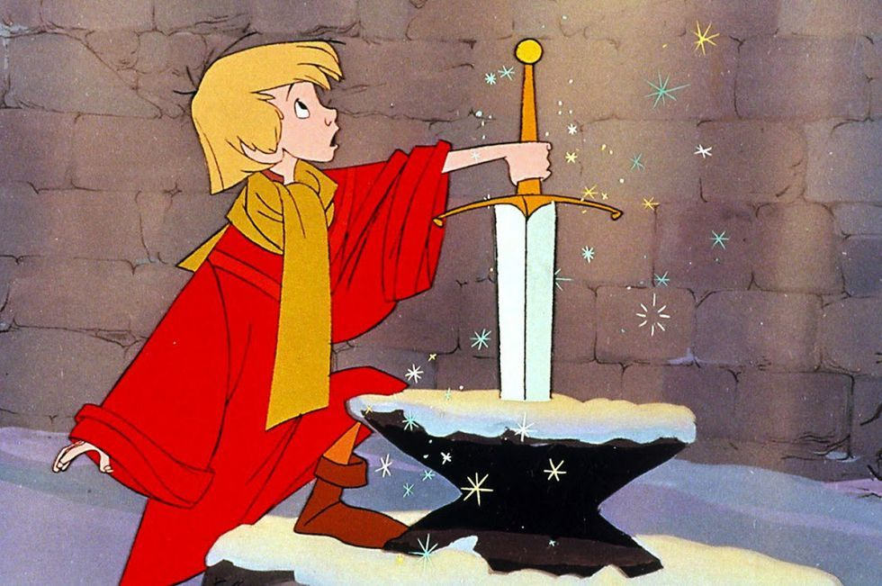
Disney también encontró su estilo dentro de las fronteras de la leyenda artúrica, y nada más y nada menos con el mismísimo Rey Arturo. Ahora bien, de momento le conocemos siendo un niño y descubriendo la magia junto a Merlín, quien se convierte en el verdadero protagonista de esta historia animada.
Sinopsis: Inglaterra ha quedado sin monarca. Al mismo tiempo aparece en una iglesia una antigua espada clavada en una piedra con la siguiente leyenda: "Quien arranque esta espada de la piedra será el legítimo Rey de Inglaterra". El mago Merlín, seguro de que el muchacho capaz de obtener esta espada es un joven llamado Wart, se ofrece a darle sorprendentes lecciones sobre la vida.

"Busca lo más vital, no más, lo que es necesidad, no más, y olvídate de la preocupación...". Quién no recuerda esta famosa letra de la canción principal de 'El libro de la selva', un clásico absoluto protagonizado por numerosos animales de la selva y cuya versión en acción real (dirigido por Jon Favreau) se considera el mejor remake moderno de Disney.
Sinopsis: Vagabundeando por la selva, Bagheera, una vieja pantera, encuentra a un niño en una canoa destrozada. El animal le deja al cuidado de una familia de lobos, que le tratan como si fuera uno de sus cachorros. Diez años después, el tigre Shere Khan, un cazador nato de hombres, le acosa con insistencia, aunque el oso Baloo decide protegerle. El niño Mowgli vive en la jungla, acosado por el la serpiente Kaa y compartiendo el tiempo libre con los buitres.
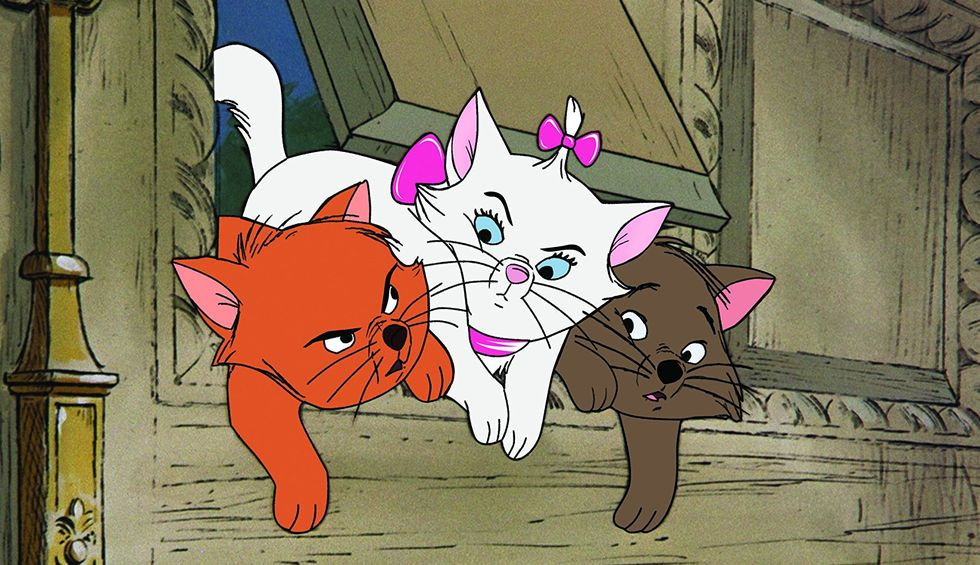
¿Y si la aristocracia estuviese formada por gatos? Así nacieron estos peludos protagonistas conocidos como los Aristogatos, tres hermanos que no dejan de pelearse, entre ellos y, también, con su mayordomo Edgar. Y no olvidamos a su elegante madre, la Duquesa, con la que viven la aventura de sus vidas intentando encontrar el camino a casa.
Sinopsis: Año 1910. En París, una anciana millonaria y excéntrica lleva una vida feliz con sus gatos en su enorme mansión, con la única ayuda de su fiel mayordomo Edgar. Allí, la gatita Duquesa vive con sus tres traviesos cachorros, sin saber que Edgar planea acabar con todos los gatos para convertirse en el único heredero de la enorme fortuna de la anciana. Con este propósito, los abandona en un lugar remoto.

Robin Hood convertido en un zorro, el Pequeño Juan en un oso y el rey Ricardo en un león (por supuesto). Así es cómo llevó Disney a la gran pantalla esta clásica historia del héroe que robaba a los ricos para dárselo a los pobres. El legendario arquero del folclore británico encontró aquí su versión más apta para todos los públicos.
Sinopsis: La diversión y el romance aparecen por doquier cuando Robin Hood, el héroe espadachín del Bosque de Sherwood, se desliza de aventura en aventura con su valiente ayudante, Little John, y su desternillante banda. Su objetivo es vencer al malvado príncipe y su ayuda de cámara, Hiss, que tienen atemorizado al pueblo a base de injustos impuestos.

En los años 70, Disney nos dejó clásicos animados (y animales) como 'Los Rescatadores', que quizás hoy ha caído un poco en el olvido en favor de otros títulos del estudio, pero que en su momento demostró la destreza visual y narrativa de Disney.
Sinopsis: Una niña huérfana que ha sido secuestrada envía una nota dentro de una botella pidiendo ayuda. Bernardo y Bianca, dos valientes ratones, miembros de la Sociedad Internacional de Rescate, reciben el mensaje que los llevará al peligroso "Pantano del Diablo". Allí, ayudados por la libélula Evinrude y los habitantes del pantano, vivirán un sinfín de emocionantes aventuras luchando contra la malvada Madame Medusa.
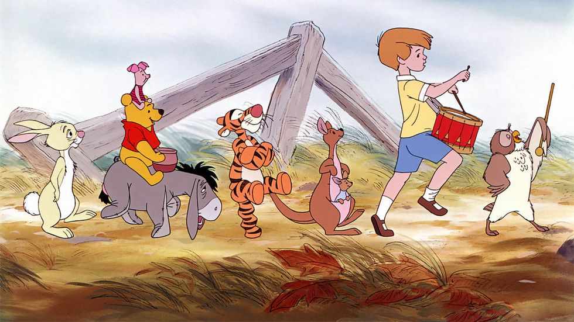
Tres cortometrajes forman esta película de que gira alrededor de las aventuras del oso Winnie the Pooh, uno de los personajes más famosos de Disney, basado en los libros de A.A. Milne. Junto a sus amigos, en el Bosque de los Cien Acres, vive aventuras y busca desesperadamente un poco de miel mientras aprende valores como la amistad, el compañerismo y la generosidad.
Sinopsis: Una recopilación de las mejores aventuras de Winnie The Pooh: 'Winnie The Pooh y el Árbol de la Miel', 'Winnie The Pooh y el Bosque Encantado' y 'Winnie The Pooh... ¡Y Tigger También!'.

¡Ellos solo querían ser amigos! 'Tod y Toby' es otra de esas películas de Disney que consiguieron partirnos el corazón.
Sinopsis: La aventura y la diversión de este clásico de la Disney comienzan cuando una adorable viuda adopta un precioso cachorro de zorro llamado Tod. El travieso zorro pronto se encuentra con Toby, un adorable cachorro de perro de caza. Así se hace los dos inseparables amigos... sin saber que por su naturaleza deberían ser enemigos. Bajo la mirada vigilante de Mamá Búho, Tod y Toby juegan y se divierten en el bosque, inconscientes de que en el futuro tendrán que enfrentarse y poner su amistad a prueba.
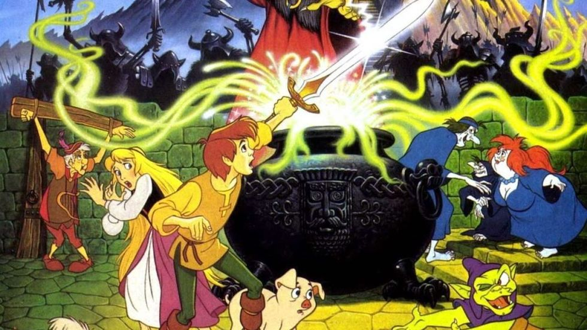
¿La película más terrorífica de la historia de Disney? 'Taron y el caldero mágico' fue un absoluto fracaso en la historia del estudio, y aún hoy parecen avergonzarse bastante de su existencia. Sus villanos (un ejército de muertos resucitados) resultaron excesivamente perturbadores para el público infantil de la época, y su historia tampoco cuajó en el imaginario Disney. Aun así, merecería una segunda oportunidad.
Sinopsis: Taron, un valeroso joven, debe impedir que el malvado Rey Horned se apodere del Caldero Mágico, cuya fuerza misteriosa es capaz de crear un auténtico ejército de invencibles guerreros sobrenaturales. En su lucha contra el mal, Tarón cuenta con la ayuda de su maestro, Dallben, la princesa Eilonwy, un animal con aspecto de osito de peluche llamada Gurgi, un juglar que se hace llamar Fflewddur Fflam, un cerdito con dotes de clarividente y un trío de brujas excéntricas.
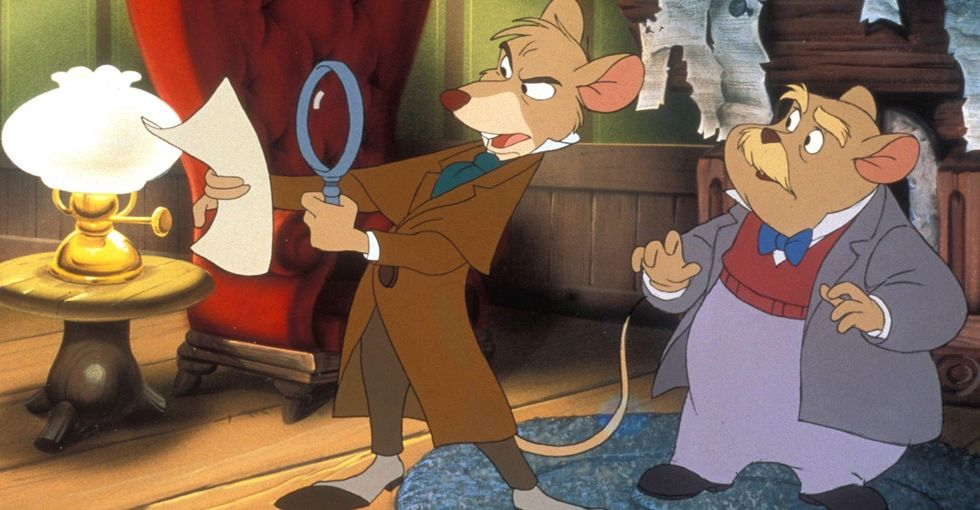
Disney también realizó su propia versión de Sherlock Holmes, el legendario personaje literario creado por Arthur Conan Doyle. ¿La diferencia? Aquí le da vida un ratón, Basil, capaz de resolver cualquier crimen. Una película de mediados de los ochenta que ya evidenció la calidad animada del estudio y su habilidad para las historias de aventuras aptas para toda la familia.
Sinopsis: A finales del siglo XIX, Bail, el Sherlock Holmes de los ratones, tiene que enfrentarse a su eterno enemigo: el profesor Ratigan. La aventura comienza cuando una jovencita es raptada por el villano Ratigan, Entonces Basil y sus inseparables amigos, el Dr. Dawson y Tobi, se embarcarán en un apasionante rescate.
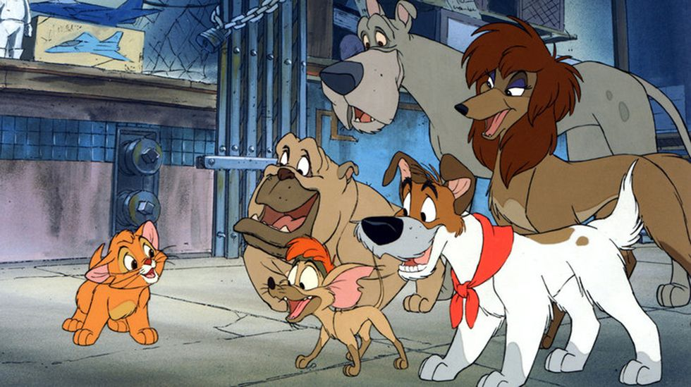
Adaptación animada y muy libre de 'Oliver Twist', la icónica obra de Charles Dickens, 'Oliver y su pandilla' es una de esas películas dentro de 'remakes de acción real de Disney todavía pendientes', pero en realidad es mucho más: una divertida y entretenida aventura gatuna y perruna en la gran ciudad, aunque quizás Dickens tendría algún apunte que hacerle.
Sinopsis: Un gatito huérfano llamado Oliver se une a Fagin y a su banda de ladronzuelos con Dodger, un maestro moviéndose por la ciudad, y el simpático Chiguagua Tito. Un buen día, el pequeño Oliver deja las calles al ser adoptado por Jenny, una niña rica que se lo lleva a su casa, donde vivirá con todas las comodidades. Pero cuando Jenny es secuestrada por el malvado jefe de Fagin y su terrorífico Doberman, Oliver comprobará el valor de la verdadera amistad al ver cómo toda la banda se pone en marcha para rescatarla.

Ahora que el remake de acción real de 'La Sirenita' es una realidad, hay que volver a la película que dio comienzo a la Edad Dorada de Disney en los años 90. Con Ariel empezó todo. Las canciones de Howard Ashman hicieron entrar al estudio en una nueva etapa llena de magia, espectáculos del nivel de Broadway e historias de todo tipo. ¡Hasta bajo del mar!
Sinopsis: La más bella sirena de la familia real siente curiosidad por el mundo de los humanos. Tanto que pide a sus amigos el delfín y la ballena que le cuenten cosas de los hombres. Cierto día ve, en un barco, a un apuesto príncipe al que una tormenta arroja al mar. La sirenita lo salva y le acompaña hasta la orilla.

Fue la primera película de Walt Disney Pictures que consiguió una nominación al Oscar a la Mejor Película, midiéndose con las apuestas de acción real. Y es que por algo es una de las mejores películas del estudio, un cuento de hadas hecho realidad que la música de Howard Ashman convirtió en un espectáculo digno de Broadway.
Sinopsis: Bella es una joven muchacha que vive en una pequeña aldea junto a su padre, un viejo loco idealista que no para de crear inútiles inventos. Un día, tratando de encontrar a su padre que se ha perdido en una tormenta, la joven llega hasta un extraño castillo habitado por objetos animados y por una Bestia que antes fue un príncipe embrujado por un hada.
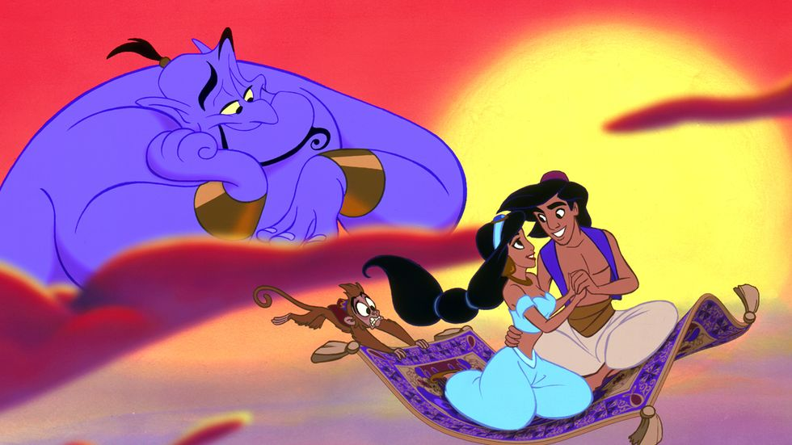
Nosotros sí que vivimos en mundo ideal cada vez que nos sumergimos en esta película, todo un clásico noventero de Disney. Con sus canciones pegadizas y personajes tan icónicos como el Genio de la lámpara, es una diversión asegurada para la que el tiempo no pasa.
Sinopsis: Un joven adolescente encuentra una vieja lámpara de aceite. Cuando la frota, de su interior sale un genio que promete concederle todos sus deseos. Entre los dos surge una entrañable amistad.

Para sorpresa de nadie, 'El rey león' es considerada como la mejor película animada de Disney según los usuarios de IMDb. Y es que por algo es, también, una de las mejores películas de animación de todos los tiempos. La adaptación de 'Hamlet' de William Shakespeare en la sabana africana sigue siendo todo un clásico.
Sinopsis: La sabana africana es el escenario en el que tienen lugar las aventuras de Simba, un pequeño león que es el heredero del trono. Sin embargo, al ser injustamente acusado por el malvado Scar de la muerte de su padre, se ve obligado a exiliarse. Durante su destierro, hará buenas amistades e intentará regresar para recuperar lo que legítimamente le corresponde.
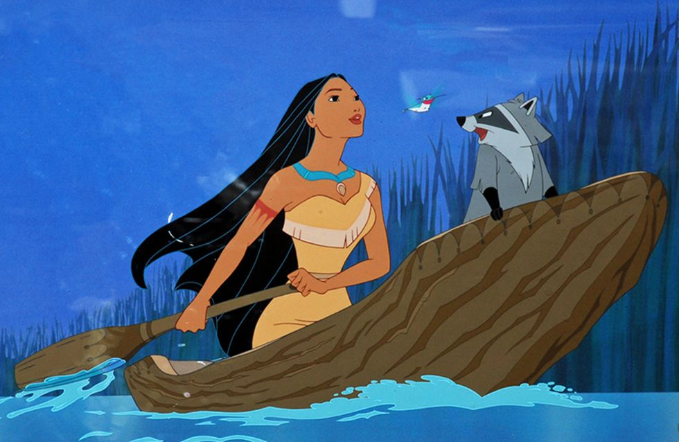
Aunque la verdadera Pocahontas no era como Disney te la enseñó, 'Pocahontas' puede contarse entre las películas más recordadas de la Edad Dorada de Disney en los años 90. ¿Quién no ha cantado río abajo con los colores en el viento? La intrépida protagonista, parte importante de la nueva generación de princesas guerreras del estudio, nos lleva en un viaje de mensaje anticolonialista.
Sinopsis: Durante la colonización inglesa del Estado de Virginia el capitán John Smith es nombrado gobernador inglés de esa parte del Nuevo Mundo. Éste se enfrenta a los indios y le confunden con un dios ya que sus rudimentarias armas no consiguen perforar su armadura. Smith se enamora de una princesa india Pocahontas, dando así comienzo a una etapa de comprensión y entendimiento entre razas.

Aunque Disney rebajó mucho la novela de Victor Hugo, el resultado final sigue conteniendo algunos momentos tremendamente perturbadores. ¿El peor? La canción 'Fuego infernal' del juez Frollo, donde demuestra su lujuria reprimida hacia Esmeralda. Es por ese atrevimiento por el que contamos esta película entre las más admirables del estudio.
Sinopsis: Oculto a las miradas de todos los ciudadanos de París, en lo alto del campanario de la catedral de Notre Dame, vive Quasimodo. Su tutor, el juez Frollo, no le permite bajar nunca del Campanario. En compañía de tres simpáticas gárgolas de piedra, Victor, Hugo y Laverne, Quasimodo pasa las horas observando el bullicioso ir y venir de la gente. Hasta que un día, decide bajar a escondidas y conoce a la bella Esmeralda, con la que vivirá su mayor aventura.
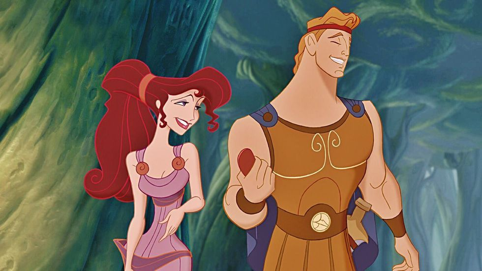
El remake de acción real de 'Hércules' es una realidad, y eso nos recuerda lo maravillosa que es su versión animada, un prodigio de la imaginación que convierte la mitología griega en un producto apto para los espectadores de todas las edades. Además, contiene algunas de las canciones más icónicas del estudio, como 'No importa la distancia', 'De cero a héroe' y 'No diré que es amor'.
Sinopsis Hércules, el hijo de Zeus y de Alcmena, reina de Tebas, es secuestrado del Olimpo por los secuaces de Hades, que tienen la misión de despojarlo de su inmortalidad. Hércules crecerá en un mundo de mortales hasta que le llegue la hora de regresar al Olimpo.
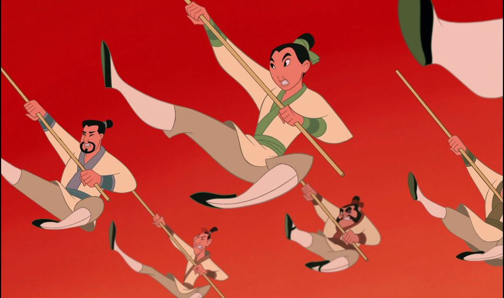
Posiblemente una de las películas más revolucionarias de Disney. Mulan es un icono feminista, una ruptura con el legado de las princesas clásicas para presentar a una heroína de pleno derecho que vive un proceso de autodescubrimiento sin que el romanticismo sea un pilar fundamental de su viaje (aunque, claro, ahí está el guapo de Shang). Tiene canciones y personajes inolvidables.
Sinopsis: El implacable Shan Yju, jefe de los hunos, encabeza la gran invasión en China seguido de su vasto ejército. El emperador, que cuenta con una gran popularidad, se ve obligado a reclamar a un hombre de cada familia para unirse al Ejército Imperial. Mientras tanto, en una aldea lejana, vive Mulan, hija única de la familia Fa, se hace pasar por un hombre para entrar en el ejército en lugar de su anciano padre. Comienza así su duro entrenamiento, a cargo del capitán Shang, y su camino para convertirse en la salvadora de China.
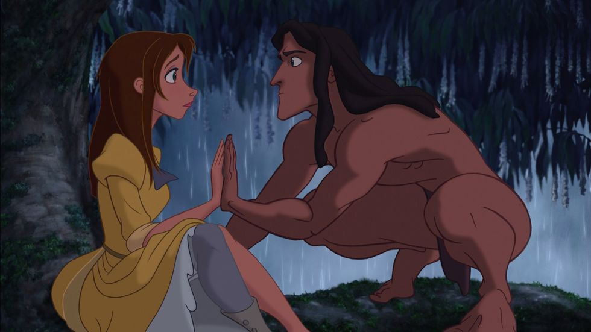
Dos mitos culturales gigantescos se dieron cita en esta película de finales de los 90: el gran espectáculo animado Disney y el fascinante Tarzán, Señor de los Monos, que imaginó Edgar Rice Burroughs. El resultado es una aventura deudora del estilo del Disney noventero, con sus canciones de musical y su sentido del humor, además de una crítica al colonialismo.
Sinopsis: Cuando la gorila Kala encuentra un niño humano huérfano en la jungla, decide adoptarlo como su propio hijo a pesar de la oposición de Kerchak, el jefe de la manada. Junto a Terk, un gracioso mono y Tantor, un elefante algo neurótico, Tarzán crecerá en la jungla desarrollando los instintos de los animales y aprendiendo a deslizarse entre los árboles a velocidad de vértigo. Pero cuando una expedición se adentra en la jungla y Tarzán conoce a Jane, descubrirá quién es realmente y cuál es el mundo al que pertenece...

Es una de las películas más infravaloradas de Disney, y también una de las más divertidas. Aparcó el espectáculo musical que venía caracterizando al estudio en los años 90 y se centró en la comedia, con gags divertidísimos y una herencia de la 'screwball comedy'. Una joya por (re)descubrir.
Sinopsis: El arrogante y egoísta emperador Cuzco es traicionado y convertido en llama por la ambiciosa Yzma y su guardaespaldas Kronk. El emperador, que una vez lo tuvo todo, se verá abocado a confiar en un llano y simpático campesino llamado Pacha, para encontrarse a sí mismo.
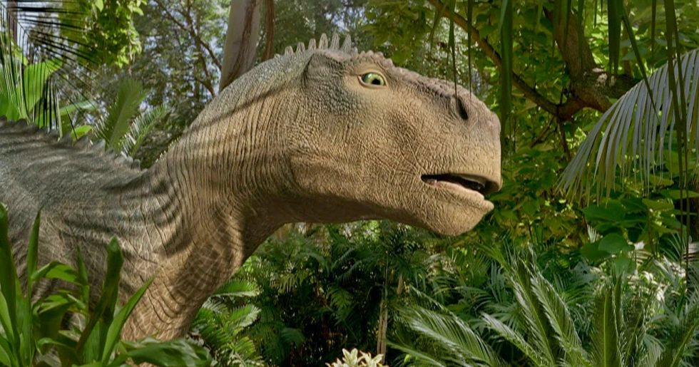
Esta, una de las mejores películas de dinosaurios, debería recordarse como una de las películas más arriesgadas y diferentes de Disney. No hay más que ver la estética de la animación, con una intención más realista que a la que nos tiene acostumbrados. Todo para acercarse un poco mejor a las vidas de los dinosaurios en la prehistoria, antes de su trágica extinción.
Sinopsis: Hace 65 millones de años, los grandes reptiles eran los indiscutibles señores del planeta Tierra. Nada se interponía en su camino de grandes zancadas. Múltiples especies se repartían la comida y el cobijo bajo un sol y un cielo que estaba a punto de marcar fatídicamente sus destinos. El iguanadonte Áladar, criado por unos lémures tras haber sido separado de sus congéneres, vive en una plácida isla. Un día, una lluvia de meteoritos destruye su hábitat, dejándolos a él y a su familia como únicos supervivientes. A la búsqueda de un lugar habitable, hallarán la compañía y solidaridad de un grupo de dinosaurios.
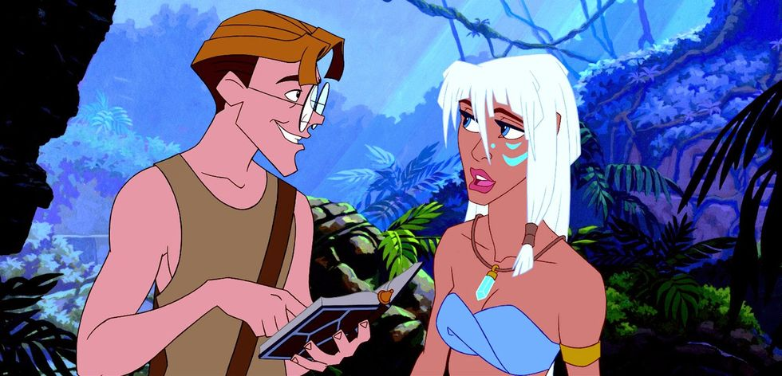
Con el espíritu de las novelas de Julio Verne, 'Atlantis' se convirtió en una de las mejores y más reivindicables películas Disney del siglo XXI. Mientras esperamos que Tom Holland y Zendaya se decidan a hacer un remake de acción real como Milo y Kida (las velitas están puestas), seguiremos disfrutando del más puro cine de aventuras que ha hecho el estudio.
Sinopsis: El cartógrafo Milo Thatch está empeñado en concluir la búsqueda que desarrolló, durante muchos años, su abuelo: encontrar la desaparecida civilización de Atlantis. El descubrimiento del misterioso Diario de Shepherd, un libro antiguo que aporta la clave al respecto, alimentará las esperanzas de nuestro héroe, que encabezará, junto al capitán Rourke y su tripulación, una expedición que parte en busca del imperio perdido.
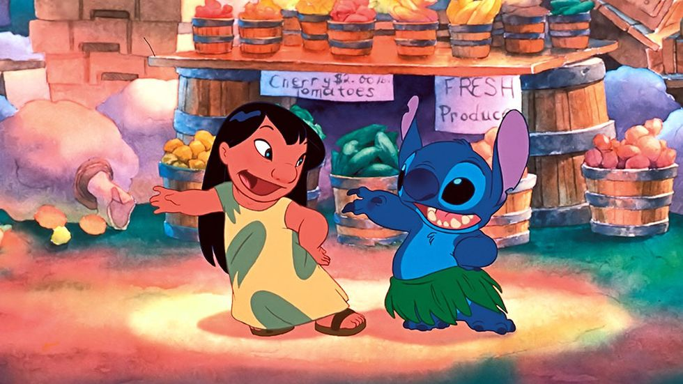
Cuánto corazón hay en 'Lilo & Stitch', donde aprendimos que 'ohana' significa familia. A pesar de que Stitch se ha convertido en un habitual del 'merchandising' del estudio, la película ha quedado injustamente olvidada. Y en ella encontramos los mejores dotes cómicos y familiares de Disney.
Sinopsis: Lilo, una pequeña hawaiana, adopta a una especie de perro, Stitch, que, en realidad, es un experimento genético llegado de otra galaxia. La inocencia de la niña acabará por calar en el corazón del animal que, por fin, encontrará un hogar.

Adaptación del clásico de Robert Louis Stevenson, 'La isla del tesoro', pero trasladado a un imaginario 'steampunk' de tecnología futurista y viajes a través del espacio que demostró la capacidad de riesgo y talento en el estudio. Una película prodigiosa, que respeta la tradición musical de Disney mientras abre nuevos caminos.
Sinopsis: Jim Hawkins, un quinceañero aventurero, se incorpora como grumete a la tripulación de un galeón espacial que afronta una compleja expedición intergaláctica. Protegido por John Silver, un cocinero cyborg con algunos secretos, Jim demostrará su valentía luchando contra supernovas, agujeros negros y tormentas espaciales.

Aunque muchos la conocerán por la canción 'En marcha estoy' de Phil Collins, que sonó por todas partes en el año de su estreno, 'Hermano Oso' fue una notable entrada en el Disney del siglo XXI, con una historia de magia, naturaleza y relaciones familiares.
Sinopsis: Kenai es un joven indio nativo americano que culpa a un oso de la muerte de su hermano. Tras perseguir al animal acaba con él, pero entonces, las fuerzas mágicas de la Naturaleza le transforman en oso. Convertido en criatura agreste (y perseguido por otro hermano que le cree el asesino animal de su familia), entablará una relación de amistad y cariño con un pequeño cachorro osuno.

Una de esas aventuras animadas de Disney en el nuevo siglo que no llegaron a los estándares de sus clásicos, aunque tiene su ración musical, de aventuras y gran sentido del humor. Además de una grandísima traducción del título al español, claro.
Sinopsis: Cuando Maggie, una vaca descarada, llega al rancho Cachito del Cielo, tiene dos problemas: adaptarse a sus compañeras vacunas, la Sra. Calloway (una estirada cuadrúpeda británica) y la joven Grace (una seguidora de la filosofía New Age), y salvar la granja, que será subastada en tres días si entre todas no consiguen 750 dólares. Las tres vacas parten hacia la ciudad, y allí descubren que hay una suculenta recompensa para quien consiga atrapar al peligroso ladrón de ganado Alameda Slim.

Reboot' de un cortometraje de Disney estrenado en 1943, 'Chicken Little' buscó (sin mucho acierto) buscarse un hueco entre los clásicos de Disney del siglo XXI con una historia que mezclaba un poco de relaciones paternofiliales fallidas, un poco de 'El patito feo' y un mucho de clichés.
Sinopsis: Un simpático pollito se convierte en el hazmerreír de su entorno cuando, alarmado, anuncia que un trozo de Cielo ha caído sobre su cabeza. En realidad, la causante del susto no es más que una bellota. Pero las cosas cambian radicalmente cuando, esta vez sí, un fragmento celeste se precipita sobre él.
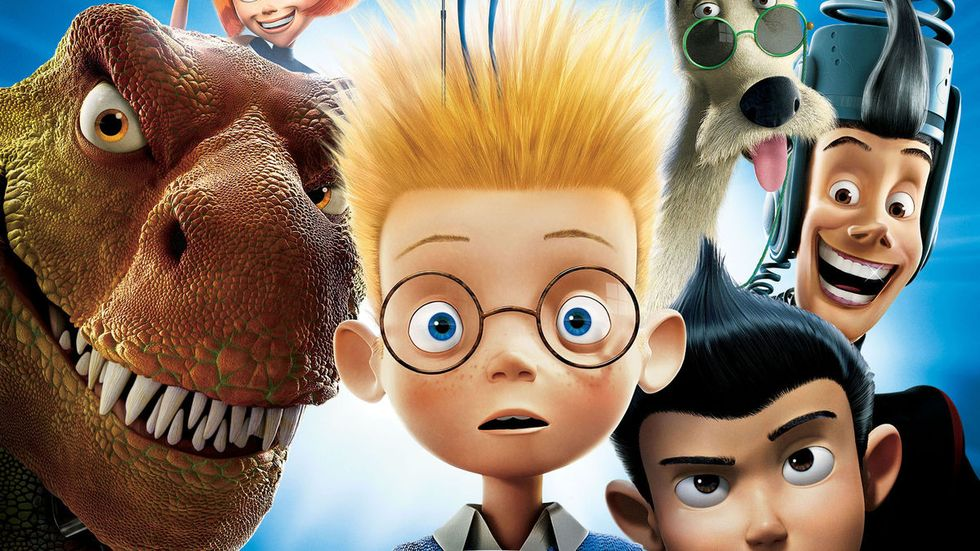
Basada en el libro de William Joyce, 'Descubriendo a los Robinsons' se propuso subir el ritmo de las películas Disney y ofrecer una aventura frenética, acelerada y compleja que no todos los críticos aplaudieron de forma unánime. Y es que el filme tiene sus problemas, pero ante todo es un viaje original y entretenido con potencial para enamorar a personas de cualquier edad.
Sinopsis: Cuando Lewis conoce a un misterioso chico que viene del futuro llamado Wilbur Robinson, ambos harán un viaje en el tiempo donde Lewis descubre el asombroso secreto de la familia Robinson.
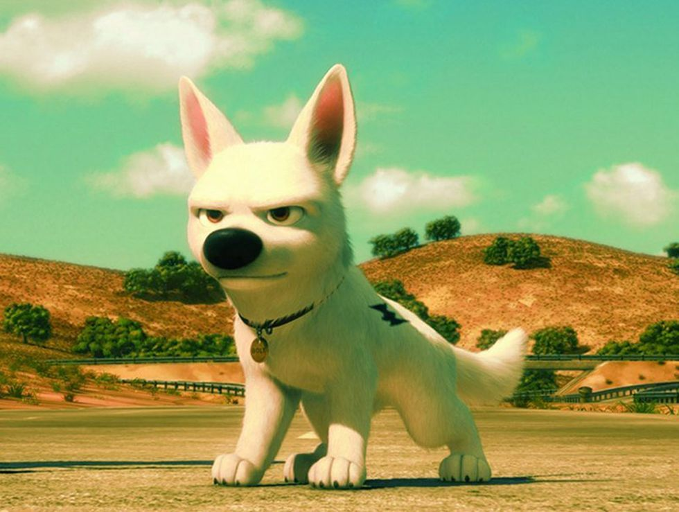
Entre los mejores perros del cine se encuentra Bolt, que además se cree que tiene superpoderes y lo único que necesitaba era una gata como mejor amiga. Quizás esta película no esté en el Olimpo de Disney, pero fue una aventura familiar de lo más entretenida y diferente. ¡Y con animales!
Sinopsis: Para el superperro Bolt todos los días están llenos de aventuras, peligros e intriga -al menos hasta que las cámaras dejan de grabar, ya que es el protagonista de un famoso programa de televisión-. Pero cuando la estrella canina del gran éxito televisivo es enviada accidentalmente desde sus estudios de Hollywood a Nueva York, comienza su mayor aventura en un viaje campo a través por el mundo real.

Cuántos años tardó Disney en llevar a la gran pantalla a su primera princesa afroamericana, que además se ha convertido en una de las mejores y más independientes princesas del estudio. Las misteriosas tierras bajas y pantanosas de Luisiana y las orillas del río Mississippi sirven de telón de fondo para una inolvidable historia de amor, música, magia y aprendizaje.
Sinopsis: Un arrogante príncipe, Naveen, ha sido convertido en sapo por un mago vudú y busca desesperadamente recuperar su forma humana. En su camino se cruzará Tiana, una joven camarera de Luisiana, que le besará y quedará convertida también en batracio.
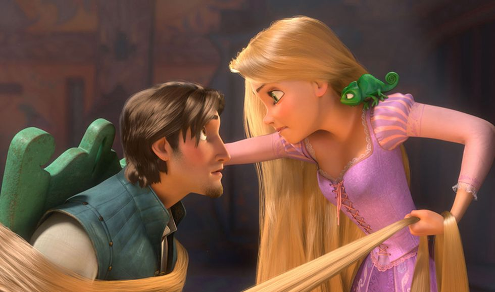
Podemos decir que 'Enredados' fue la película que devolvió a Disney al esplendor de los clásicos noventeros. Un cuento de hadas (el de Rapunzel) convertido en musical de sensibilidades modernas, referencias culturales y muchísimo sentido del humor y romanticismo. Una combinación ganadora que la convirtieron en un éxito del estudio.
Sinopsis: Cuando el más buscado –y encantador- bandido del reino, Flynn Rider, se esconde en una misteriosa torre, toma por rehén a Rapunzel una bella y avispada adolescente con una cabellera dorada de 21 metros de largo, que está encerrada en la torre. La singular prisionera, buscando el pasaporte que la saque del encierro donde ha permanecido durante años, sella un pacto con el guapo ladrón. Así es como el dúo se lanza a una travesía llena de acción, con un caballo súper-policía, un camaleón sobreprotector y una ruda pandilla de matones.
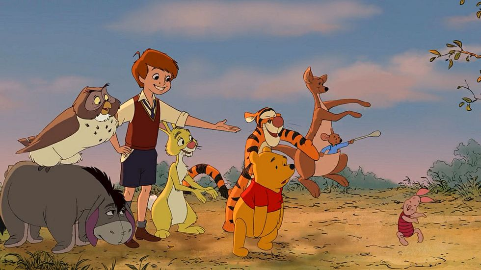
Muchos críticos apuntaron que esta película, centrada en las aventuras el osito Winnie the Pooh, recuperaba la esencia de aventura clásica de Disney, mirándose en otro clásico de esta lista, 'Lo mejor de Winnie the Pooh'. Sea como sea, este corto filme nos recordó por qué Winnie es uno de los personajes más icónicos del estudio.
Sinopsis: Winnie the Pooh vuelve a reunir al público así como a sus amigos Tigger, Rabbit, Piglet, Kangu, Rito y, por último, Igor, que ha perdido la cola. El Búho encarga a toda la pandilla una extraña misión: salvar a Christopher Robin de un delincuente imaginario; así que el oso, que sólo había salido a buscar un poco de miel, ve cómo se le complica un día que prometía ser apacible.
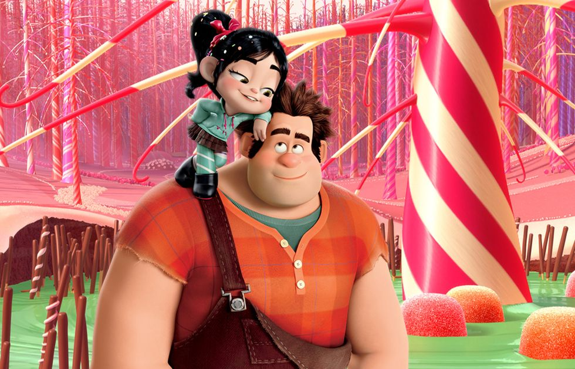
¿Y si el villano pudiese convertirse en el héroe? Esta película nos demuestra que no nos define la forma en la que nos han programado o educado, sino las decisiones que tomamos y la valentía que le ponemos a los retos de la vida. Eso es lo que tendrá que aprender el protagonista de este filme en sus aventuras a través de los videojuegos de un arcade.
Sinopsis: Hace décadas que Ralph está a la sombra de Fix-It Felix, Jr. el chico bueno y estrella del videojuego que siempre consigue arreglar los desastres. Ralph está harto de ser el malo así que se pone manos a la obra. Viaja por la sala de juegos atravesando varias generaciones de videojuegos para demostrar que él también puede ser un héroe. En su periplo, Ralph se topa con Vanellope von Schweetz, un "error de programación" de Sugar Rush, un juego de karts hecho de dulces, que bien podría convertirse en su primera amiga de verdad. Pero todo cambia cuando aparece un enemigo letal que pone en peligro a toda la sala de juegos.
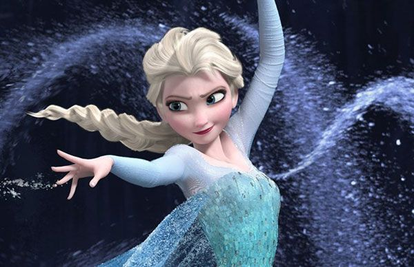
Si hablamos del Disney del siglo XXI, no podríamos olvidar uno de sus éxitos más atronadores y el retorno del estudio hacia el estilo que les hizo grandes en los años 90. Adaptación libre del cuento 'La reina de las nieves', 'Frozen' es una aventura animada apasionante, con una canción ganadora de un Oscar y convertida en icono ('Let it go') y unos personajes tan queridos que hasta tuvieron su secuela ('Frozen II').
Sinopsis: Cuando una profecía condena a un reino a vivir un invierno eterno, la joven Anna, el temerario montañero Kristoff y el reno Sven emprenden un viaje épico en busca de Elsa, hermana de Anna y Reina de las Nieves, para poner fin a un gélido hechizo...
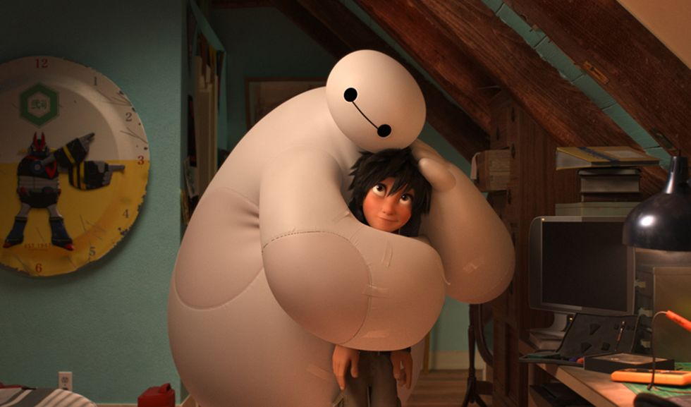
Encuentro entre Disney y Marvel en la animación, esta preciosa película mezcla Tokio y San Francisco para crear el escenario perfecto para una aventura superheroica de autoaprendizaje. El adorable Baymax parece sacado de una película de Hayao Miyazaki. Un hito animado para la posteridad.
Sinopsis: Cuando una serie de terribles acontecimientos amenazan con devastar la ciudad de San Fransokyo, el joven Hiro, un genio de la robótica de 14 años, recurre a su mejor amigo, el bondadoso robot Baymax. Juntos reclutarán una banda de superhéroes llamada Big Hero 6 que intentará frustrar los planes del malvado Yokai.
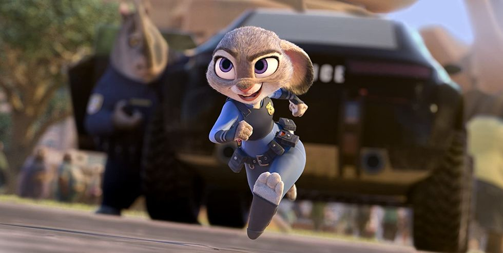
A pesar de tener poco más de un lustro de vida, 'Zootrópolis' conquistó los corazones de los fans de Disney con una historia sobre el entendimiento entre diferentes y la perseverancia para cumplir los sueños. Personajes carismáticos, una fauna animal diversa y apasionante, una canción de Shakira... ¡Lo tiene todo!
Sinopsis: Judy Hopps, una conejita que llega a Zootrópolis para ingresar en el cuerpo de policía, debe unir sus fuerzas con el estafador Nick Wilde para investigar la desaparición de un mamífero. Pronto descubrirán que son víctimas de una conspiración.
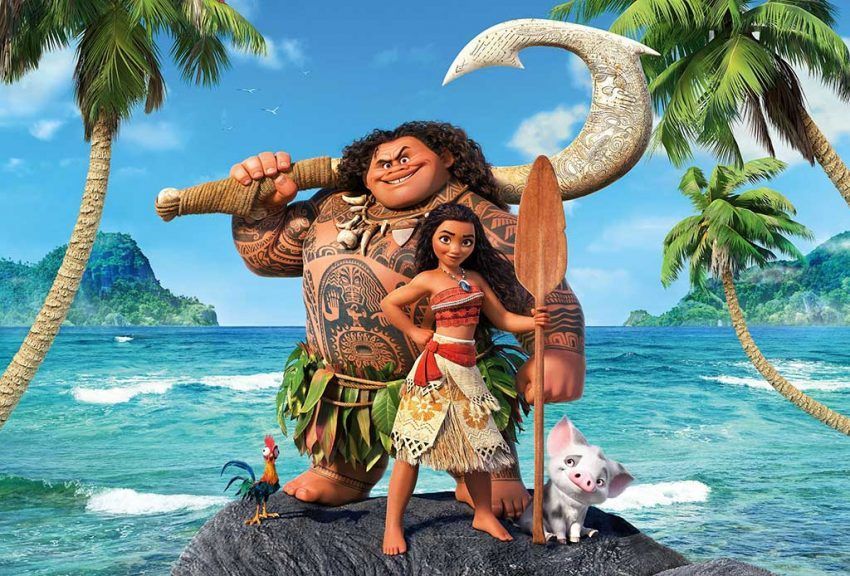
Qué hay más allá' se quedó instantáneamente grabada en nuestros corazones como una de las mejores canciones de Disney (y eso que las mejores bandas sonoras de Disney tienen mucho nivel). Y a eso ayudó una película absolutamente brillante, con canciones de Lin-Manuel Miranda y una protagonista inspiradora.
Sinopsis: a historia se desarrolla hace dos milenios en unas islas del sur del Pacífico. La protagonista es Moana Waialiki, una joven que desea explorar el mundo navegando por el océano. Ella es la única hija de un importante capitán que pertenece a una familia con varias generaciones de marinos.
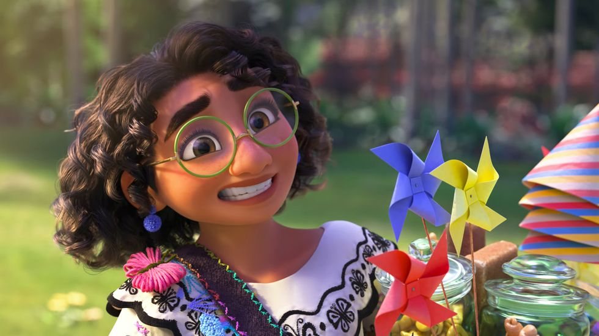
Con canciones compuestas por Lin-Manuel Miranda, 'Encanto' es una nueva carta de amor a la cultura latinoamericana al estilo de 'Coco', con mucho ritmo y color y lecciones vitales. Un prodigio animado que demuestra cómo de lejos ha llegado el nivel de detalle en la animación digital de Disney. Sin duda, una de las mejores películas de 2021.
Sinopsis: Cuenta la historia de los Madrigal, una familia extraordinaria que vive en Encanto, un pueblo precioso y encantado. Cada niño del pueblo tiene un don mágico único. Todos, salvo Mirabel. Pero cuando el hogar familiar se ve amenazado, Mirabel podría ser su única esperanza.
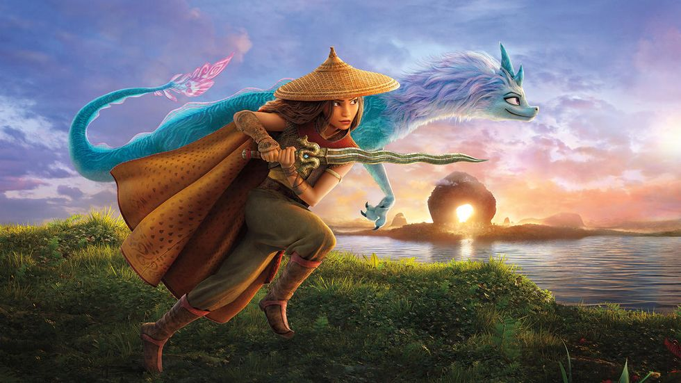
La animación de Disney ha llegado a niveles incontestables, y un nuevo ejemplo lo encontramos en 'Raya y el último dragón', una aventura animada que rinde homenaje a la cultura del sudeste asiático. Su protagonista, Raya, es una princesa guerrera de aromas clásicos, aunque la reina del show es Awkwafina dando voz a la dragona Sisu.
Sinopsis: En el mundo de Kumandra, humanos y dragones vivieron juntos hace mucho tiempo en perfecta armonía. Pero cuando unas fuerzas del mal amenazaron el territorio, los dragones se sacrificaron para salvar a la humanidad. Ahora, 500 años después, esas mismas fuerzas malignas han regresado y Raya, una guerrera solitaria, tendrá que encontrar al último y legendario dragón para reconstruir un mundo destruido y volver a unir a su pueblo.